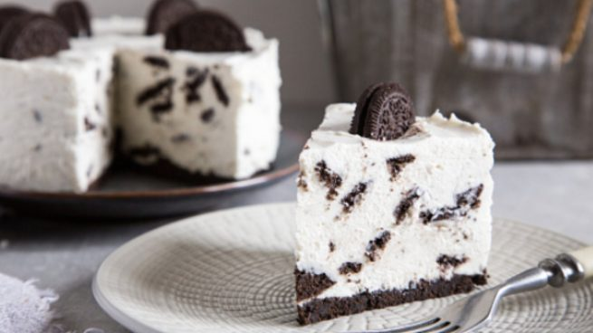

Chiskey De Oreo
Este delicoso producto es el mejor para ocasiones especiales, como cumpleaños o aniversarios, disfruta de su deliciosa textura y sabor que hara que se te haga agua la boca
Ingredientes y Preparacion
Ingredientes
- 100gr de mantequilla
- 3 paquetes de galletas oreo de chocolate
- 11/2 cucharadita de esencia de vainilla
- 380gr de queso crema (tipo Philadelphia)
- 11/4 taza de crema de leche(nata)
- 1 taza de azucar refinada
- 11/4 taza de leche entera
- 3 sobres de gelatina sin sabor
- 3/4 de agua fria
- sirope de fresa
Procedimiento
- Esta receta se prepara muy fácilmente, no necesitamos grandes elaboraciones para conseguir un buen resultado.
- Las galletas oreo son la base de esta tarta de queso que tendrá como ingrediente especial estas galletas con nombre propio.
- Nos ponemos manos a la obra triturando las galletas Oreo hasta llenar la medida de una y tres cuartos de taza de galletas Oreo. No es necesario que le quitemos la crema.
- Guardamos algunas galletas enteras o cortadas en trocitos para decorar, siempre nos quedará una tarta un poco más bonita.
- Derretimos la mantequilla en el microondas, lo colocamos a máxima potencia unos 35-40 segundos.
- Con todo listo para la base, en una fuente, mezclamos muy bien la mantequilla con la galleta Oreo triturada y la esencia de vainilla.
- Colocamos un papel para hornear sobre un molde para la tarta. Distribuimos la mezcla en el fondo del molde de manera uniforme.
- Presionamos para que esté todo bien mezclado. Refrigeramos en la nevera al menos, por 12 minutos.
- Diluimos la gelatina en el agua fría. A continuación, calentamos en el microondas por 1 minuto y medio.
- Reservamos esta base en caliente para que la tengamos lista a la hora de completar la elaboración de la tarta, es la manera que nos quede un bocado ideal.
- Batimos en una fuente o en el vaso de la batidora la leche, el queso crema, la nata, el azúcar y la vainilla, con unos 2 minutos será suficiente.
- Agregamos la gelatina aún caliente y batiremos 2 minutos más, hasta que estén integrados todos los ingredientes.
- Retiramos de la nevera el molde con la crema de mantequilla. Será el momento de verter la mezcla de todos los ingredientes que tenemos listos para la acción.
- Partimos las galletas Oreo en trozos y las agregamos sobre el relleno. Podemos colocar un poco de sirope de fresa para adornar.
- Tendremos de esta forma tan sencilla la mejor tarta de queso con oreo que existe, solo necesitamos dejar que repose, al menos una hora.
- Lo ideal es prepararla con tiempo, de un día para otro. La podemos dejar en el congelador para que esté en su punto.
- Al servir, desmoldamos la tarta y troceamos en porciones. Si queremos hacer una tarta personalizada, podemos colocar esta tarta de queso en moldes más pequeños.
- La decoración es la parte más divertida, podemos presentar el plato con un poco más de nata o con unos trocitos de galleta en polvo.
- Tendremos lista una cheesecake de Oreo espectacular, casera, con un punto especial y una serie de buenas sensaciones enormes.